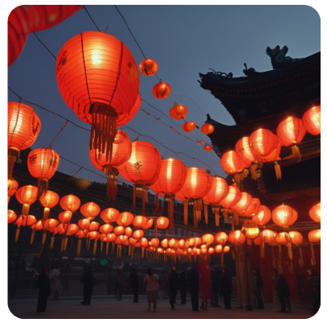
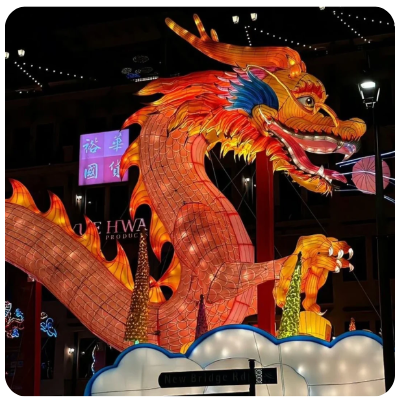
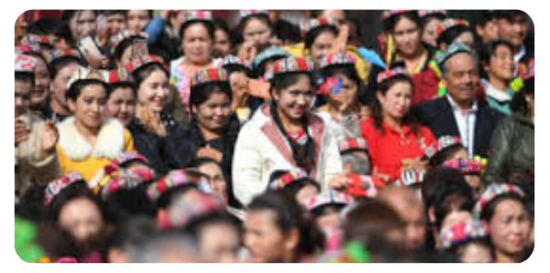

A Cultura Chinesa
A China possui uma das culturas mais antigas e ricas do mundo, marcada por tradições milenares, profundo respeito à família e busca constante pela harmonia. Suas crenças, festivais, artes e costumes refletem valores como equilíbrio, espiritualidade e união. Do brilho das lanternas vermelhas às cerimônias do chá, cada detalhe expressa a diversidade e a sabedoria de um povo que preserva suas raízes enquanto se renova com o tempo.
Tradições e Costumes
A cultura chinesa é uma das mais antigas do mundo e valoriza a família, o respeito aos mais velhos e a harmonia. Costumes como o uso de lanternas vermelhas e o presente de envelopes com dinheiro simbolizam sorte e prosperidade.
Religiões e Crenças
As principais influências religiosas são o Confucionismo, que ensina ética e respeito; o Taoismo, que valoriza o equilíbrio com a natureza; e o Budismo, introduzido da Índia há mais de 2 mil anos
Festivais
O Ano-Novo Chinês é o maior evento do país, marcado por fogos, desfiles e comidas típicas. Outros importantes são o Festival das Lanternas e o Festival do Meio Outono, quando as famílias se reúnem para celebrar.
Arte e Costumes
A caligrafia chinesa é considerada uma forma de arte, assim como a ópera tradicional e as pinturas em seda e porcelana. A cerimônia do chá é um símbolo de hospitalidade e equilíbrio espiritual.
Diversidade Étinica
A etnia Han representa cerca de 90% da população, mas o país reconhece 56 grupos étnicos, incluindo tibetanos, mongóis e uigures, cada um com suas línguas e tradições.
